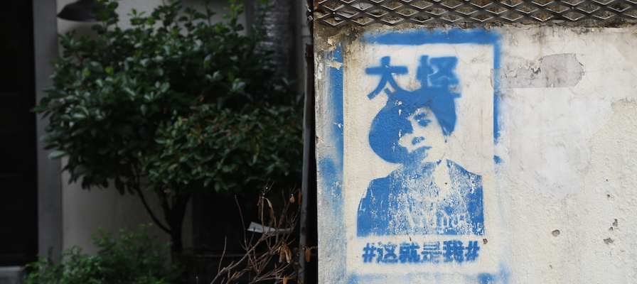
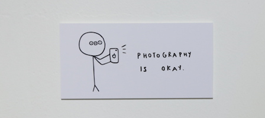

My name is Sun (last name), Jingyi (first name). I graduated summa cum laude from NYU Shanghai in 2017, with a B.S in Interactive Media Arts, and double majored in Global China Studies. Now (2020) at Royal College of Art, Information Experience Design.
Born and (mostly) raised in Beijing (population: 21 million), I have lived in three other cities, Berlin (3.7 million), New York (8.6 million), and Shanghai (24 million). Currently (2020) in London (8.9 million).
ft.okay photography and bad videography
